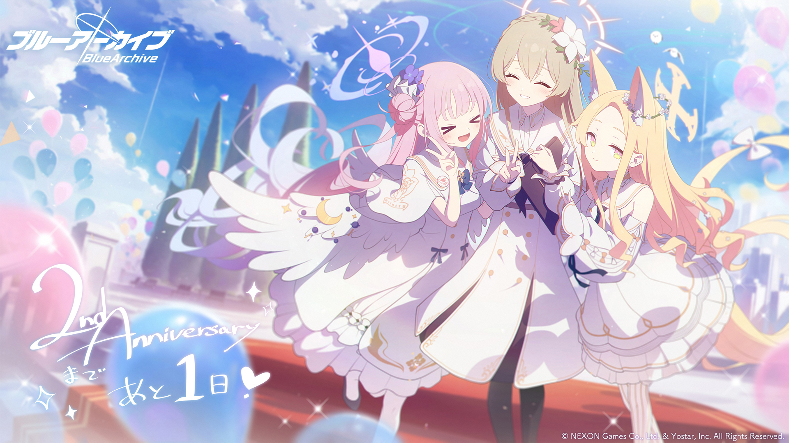

Tin Tức về game gacha anime
|  |
Blue Archive để nhận chuyển thể TV Anime Để kỷ niệm hai năm ra mắt game nhập vai theo phong cách anime, Yostar và Nexon đã khiến người hâm mộ bất ngờ khi công bố chuyển thể anime Blue Archive TV. Được phát triển bởi sự hợp tác giữa công ty con của Nexon Games và Yostar, Blue Archive được phát hành lần đầu cho iOS và Android vào năm 2021 tại Nhật Bản, sau đó là các bản phát hành ở Châu Âu, Bắc Mỹ và Châu Á vào cuối năm đó. Trò chơi đã nhanh chóng trở nên phổ biến như một game nhập vai miễn phí với cơ chế gatcha và các nhân vật hấp dẫn kể từ khi ra mắt lần đầu. |
Vì chính sách autoplay nên gu gồ đã chặn phần tử này vào năm 2018 nên nó không tự động phát audio đc mong mn thông cảm sự bất tiện này. Để bt thêm thông tin vui lòng nhấn tại đây